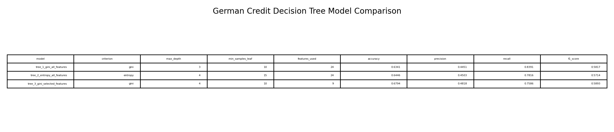
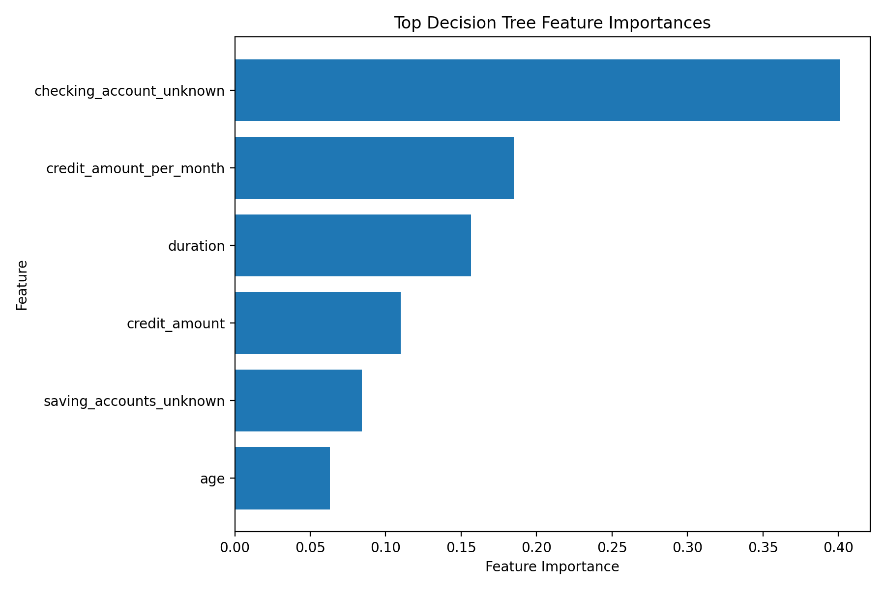

CS 432 Project Journal
Module 6 - Supervised Learning, Decision Trees
Classifying borrowers with a chain of plain yes or no questions, and comparing three trees to see what holds up.
A model you can read out loud
After the regression models, decision trees felt refreshingly transparent. A tree classifies a borrower by asking a sequence of simple questions, splitting the group at each step based on one variable, until it arrives at a lower risk or higher risk label. You can literally trace the path a borrower takes through it, which is a rare and valuable thing in lending, where any decision usually needs to be explained to someone. I stayed with the German Credit data and its credit risk label, recoded into the same lower and higher risk target I used for logistic regression so the two would be comparable.
The predictors covered age, credit amount, duration, monthly burden, sex, job, housing, savings and checking accounts, and loan purpose, expanded into 24 columns once the categories were dummy coded. One nice difference from earlier modules is that trees do not care about scale, so I skipped standardizing entirely. A tree splits on thresholds rather than distances, so it is perfectly happy comparing a credit amount in the thousands against a dummy variable that is only ever zero or one. That left me with 954 borrowers, 24 predictors, and a single target to work with.
Three trees, grown differently
Rather than trust one tree, I grew three with different settings and let them argue. The first used the Gini criterion, all 24 features, and a shallow depth of three. The second swapped in entropy, a different way of measuring how mixed a group is, and grew one level deeper. The third went back to Gini but trained on a smaller hand picked set of nine features. Gini and entropy are just two yardsticks for impurity, two ways of asking how cleanly a split separates the classes, and I wanted to see whether the choice changed the story.
It mostly did not, which was itself informative. The first tree was the most aggressive about catching risk, reaching a recall of about 84 percent at the cost of a lower accuracy near 63 percent. The second, with entropy, edged accuracy up slightly while giving back a little recall. The third, leaner tree came out best overall, with the highest accuracy at roughly 68 percent and the best F1 score of the group, even though it used fewer than half the features. That last result stuck with me, because it says a focused model can beat a kitchen sink one, and a simpler tree is also far easier to review and defend in a real lending setting.

What the trees kept asking first
The most striking pattern was how the trees agreed on where to begin. Across the different criteria and depths, the very first split kept landing on whether the borrower had an unknown checking account, which tells me that account status was the single strongest dividing line in the data. From there the trees leaned on loan duration, credit amount, the monthly burden feature, age, and savings status to keep separating the groups.
The feature importance chart from the entropy tree puts numbers on that hierarchy. An unknown checking account dominated at about 0.40, well ahead of monthly burden near 0.18, duration around 0.16, credit amount near 0.11, unknown savings at roughly 0.08, and age trailing at 0.06. I was glad to see monthly burden rank so high again, since it backs up the hunch from the very first module that how heavy a payment feels carries more signal than the raw loan size. Account context and repayment pressure, over and over, were the heart of the matter.

Why accuracy alone would mislead
Looking at the confusion matrices made it clear why a single accuracy number would have steered me wrong. The first tree correctly identified 73 of the higher risk borrowers and missed only 14, which is excellent at the one job of catching risk, but it also wrongly flagged 91 lower risk borrowers, dragging its precision and accuracy down. The leaner third tree flipped the emphasis, correctly clearing 129 lower risk borrowers and raising fewer false alarms, while still catching 66 of the risky ones.
So the best tree genuinely depends on the goal. If the priority is missing as few risky borrowers as possible, the aggressive first tree earns its keep. If the priority is a steadier balance that does not over flag good borrowers, the focused third tree wins, and on the headline accuracy and F1 numbers it was my pick. Either way the lesson was that you have to look past accuracy to the kinds of mistakes a model makes, because in lending a missed risk and a false alarm cost very different things.